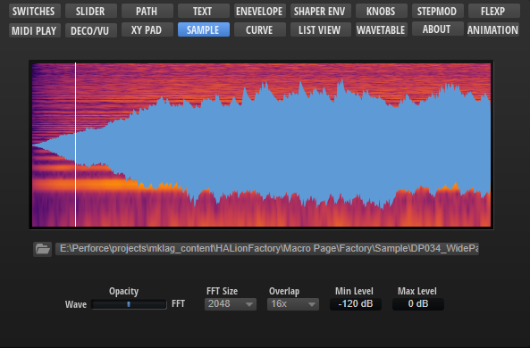

/ HALion Developer Resource / HALion Macro Page / Templates /
Sample Display
On this page:

Description
The Sample Display template contains a Waveform control for displaying the sample data of the connected zone. A script that matches the display of the Waveform control with the corresponding SampleOsc parameters of the zone is attached to the template. For example, this script shows or hides the looped regions, depending on whether the loop is active or not, and it decides which loop regions to display, depending on the selected loop (A or B) for the release and sustain loops, respectively. The template itself only provides a Scope parameter to determine which zone to display. The template works for Sample and Grain Zones.
To explore the functionality and connections:
- Load the Init Basic Controls.vstpreset from the Basic Controls library.
- Open the Macro Page Designer, go to the GUI Tree and navigate to "Pages > Sample Page".
- Select "Sample Display" and click Edit Element
 to examine the template.
to examine the template.
Template Properties
| Poperty | Description |
|---|---|
| Name | The name of the element. This name will be displayed in the GUI Tree. |
| Position/Size | Position X, Position Y, Width, Height: Position and size of the element in pixels. Position X/Y defines the position of the upper left corner. |
| Attach | Defines how an element behaves when its parent element is resized. You can set the following parameters:
|
| Tooltip | Text that appears as a tooltip when the mouse hovers over the element. |
| Template | Determines the template to be referenced. |
Template Parameters
| Parameters | Description |
|---|---|
| Scope | Allows you to determine the zone with the sample data to be displayed. The template works for Sample and Grain Zones. If a Sample Zone is connected, the Play Pos property on the Waveform control inside the template must be set to @id:a0064, for Grain Zones this must be set to @id:100064. |
| FFT | Sets the block size of the window that is used for the analysis. This allows you to adjust the trade-off between temporal resolution and frequency resolution. |
| Overlap | Sets the number of overlapping FFT windows. Increasing the overlap can be used to reduce analysis limitations of the FFT windows, which can lead to a loss of details, such as transients. |
| Min Level | Sets the minimum signal level for the FFT. The colors of the FFT are sclaed accordingly reveiling more or less details. |
| Max Level | Sets the maximum signal level for the FFT. The colors of the FFT are sclaed accordingly reveiling more or less details. |
| Opacity | Allows you to seamlessly blend between sample and FFT display. |
The template parameters FFT, Overlap, Min Level, Max Level, and Opacity are connected to their respective control templates through the corresponding parameters of a MIDI script. This configuration ensures that the FFT settings are saved with the presets. However, if you prefer not to include FFT settings in presets, you can connect the template parameters with the control templates by using UI variables. In this manner, the settings will only be preserved with the current project.
MIDI Script
-- define parameters for sample display
defineParameter("FFT", nil, 6, {"32", "64", "128", "256", "512", "1024", "2048", "4096", "8192", "16384", "32768", "65768"})
defineParameter("Overlap", nil, 4, { "No", "2x", "4", "8x", "16x", "32x", "64x", "128x"})
defineParameter("MinLevel", nil , -120, -240, 20, 1.0)
defineParameter("MaxLevel", nil, 0, -220, 0, 1.0)
defineParameter("Opacity", nil, 0, -100, 100, 1.0)
Components inside the Template

Controls and Subtemplates
| Item | Description |
|---|---|
| waveform | The Waveform control for displaying the sample data. If a Sample Zone is connected, the Play Pos property must be set to @id:a0064, for Grain Zones this must be set to @id:100064. The loop properties must be connected to the corresponding parameters of the included UI script: @SusLoopStart, @SusLoopEnd, @RelLoopStart, and @RelLoopEnd. All other properties must be connected to the corresponding parameters of the zone. |
| ZeroLine | An Image control that provides the bitmap for the zero line of the sample display. |
UI Script
kSamplesMax = 0x7fffffff;
function onLoopChanged()
local susMode, susStart, susEnd, relMode, relStart, relEnd;
if LoopSel == 0 then
susMode, susStart, susEnd = SustainLoopModeA, SustainLoopStartA, SustainLoopEndA;
relMode, relStart, relEnd = ReleaseLoopModeA, ReleaseLoopStartA, ReleaseLoopEndA;
else
susMode, susStart, susEnd = SustainLoopModeB, SustainLoopStartB, SustainLoopEndB;
relMode, relStart, relEnd = ReleaseLoopModeB, ReleaseLoopStartB, ReleaseLoopEndB;
end
if susMode == 0 then
susStart, susEnd = 0, 0;
end
if relMode == 0 then
relStart, relEnd = 0, 0;
end
SusLoopStart, SusLoopEnd = susStart, susEnd;
RelLoopStart, RelLoopEnd = relStart, relEnd;
end
defineParameter("LoopSel", "Loop Select", 0, 0, 1, onLoopChanged);
defineParameter("SustainLoopStartA", "Zone Sustain Loop Start A", 0, 0, kSamplesMax, onLoopChanged);
defineParameter("SustainLoopEndA", "Zone Sustain Loop End A", 0, 0, kSamplesMax, onLoopChanged);
defineParameter("SustainLoopModeA", "Zone Sustain Loop Mode A", 0, 0, 10, onLoopChanged);
defineParameter("SustainLoopStartB", "Zone Sustain Loop Start B", 0, 0, kSamplesMax, onLoopChanged);
defineParameter("SustainLoopEndB", "Zone Sustain Loop End B", 0, 0, kSamplesMax, onLoopChanged);
defineParameter("SustainLoopModeB", "Zone Sustain Loop Mode B", 0, 0, 10, onLoopChanged);
defineParameter("ReleaseLoopStartA", "Zone Release Loop Start A", 0, 0, kSamplesMax, onLoopChanged);
defineParameter("ReleaseLoopEndA", "Zone Release Loop End A", 0, 0, kSamplesMax, onLoopChanged);
defineParameter("ReleaseLoopModeA", "Zone Release Loop Mode A", 0, 0, 10, onLoopChanged);
defineParameter("ReleaseLoopStartB", "Zone Release Loop Start B", 0, 0, kSamplesMax, onLoopChanged);
defineParameter("ReleaseLoopEndB", "Zone Release Loop End B", 0, 0, kSamplesMax, onLoopChanged);
defineParameter("ReleaseLoopModeB", "Zone Release Loop Mode B", 0, 0, 10, onLoopChanged);
defineParameter("SusLoopStart", "Display Sustain Loop Start", 0, 0, kSamplesMax);
defineParameter("SusLoopEnd", "Display Sustain Loop End", 0, 0, kSamplesMax);
defineParameter("RelLoopStart", "Display Release Loop Start", 0, 0, kSamplesMax);
defineParameter("RelLoopEnd", "Display Release Loop End", 0, 0, kSamplesMax);